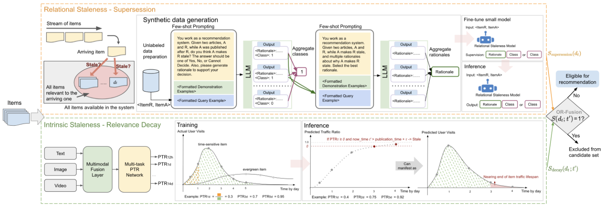

Decomposing Staleness in Recommender Systems: A Dual-Filter Framework for Supersession and Decay (推荐系统过时性解耦：取代与衰减的双过滤器框架)
- 会议/期刊: CIKM 2026 (Applied Research Track)
- 作者与机构: Di Bai, Feng Han, Zhenwei Tang, Jintao Liu, Luoshu Wang, Jialu Liu (Google LLC)
- 推荐链路定位: 召回前候选过滤（上游 pruning，先于重排序）
- 研究方向: 去偏公平与工业架构 / 大语言模型推荐
- 论文原文: 论文原文链接
- 开源代码: 暂未开源
TL;DR (1分钟核心速览)
工业推荐长期用“年龄截断 + 互动阈值”粗粒度代理处理过时内容，既误杀常青内容又滞后于真实失效。本文提出 SDF，把过时性拆为取代（supersession，关系型）与衰减（decay，内在型）两种机制：前者用 LLM 教师合成标注 + 知识蒸馏训练成对分类学生模型，后者用多模态早融合网络从内容预测各时间窗的“预测流量比 PTR”。两过滤器以 OR 融合在上游剪枝。Google Discover 两年部署使过时举报下降 54.9%（取代 64.0%、衰减 34.4%），并节省约 8.7% 服务算力。
Background & Motivation (背景与核心矛盾)
- 主流范式: 工业界普遍用发布时间截断（age cutoff）与互动量/CTR 下限（engagement cliff）管理内容新鲜度，如 YouTube 新鲜内容栈、Kuaishou 冷启动门控、Twitter/X 后置启发式过滤。
- 前人局限: ① 年龄截断是粗粒度代理，长截断仍放过过时项、短截断误杀常青内容；② 互动启发式存在结构性滞后——系统必须先反复曝光劣质内容才能“学到”它已过时；③ 学术界的流行度衰减建模（TimeSVD++、生命周期曲线）依赖已观测互动，且多为类目级而非单条内容级。
- 核心洞察 (Key Insight): 过时性并非单一现象。取代的信号是关系型的（只有新到达项与旧项构成矛盾/推进关系时才使旧项过时），衰减的信号是内在型的（由内容自身预期寿命决定，与任何新项无关）。二者检测方式本质不同，必须解耦建模。
- 本文切入点: 用两个互补的、均为 item 级（非个性化）的学习型过滤器分别覆盖两种机制，OR 融合后在上游剪枝，既提升体验又降低下游算力。
Method (核心方法设计)
1. 整体框架 (Overall Architecture)
SDF 维护候选集 \(\mathcal{A}\)，新项到达即入池，被任一过滤器判定过时即移出，下游排序器只消费\(\mathcal{A}\)。关系型过滤器对每个新到达项\(d'\)与同主题旧项\(d\)做成对判定\(f(d,d')\in\{0,1\}\)；内在型过滤器对项\(d_t\)在决策时刻\(t'\)用内容预测其已累积的寿命流量份额\(g(d_t,\tau)\)。两者输出经 OR 融合为\(S(d_t;t')\)，为 1 则剪枝。由于两个模型都不依赖请求用户与上下文，可完全离线计算并缓存，服务时仅按时间戳查表，零在线推理开销。
flowchart TD
A["新到达项 d' 与同主题旧项 d"] --> B["关系型过滤器: LLM蒸馏成对分类 f(d,d')"]
A --> C["内在型过滤器: 多模态PTR模型 g(d_t,τ)"]
B --> D["OR 融合 S(d_t;t')"]
C --> D
D -->|S=1| E["从候选集 A 剪枝"]
D -->|S=0| F["进入下游排序服务"]
2. 关键设计拆解 (Key Designs)
- 关系型过时检测：LLM 教师 + 理由监督蒸馏：人工成对标注成本不可行，故用 PaLM 2-L 做教师。采样是关键难点——正例只存在于“中等相似度窄带”（太相似是近重复、太不相似则关系平凡），且热点话题易产生冗余对。算法先聚类、按簇规模比例抽代表项、跨簇成对，再按相似度分桶加权采样以过采样正例。标注时每对抽 7 次独立样本，做两阶段多数投票：先投票类别，再对胜出类别下的理由做二次 LLM 投票（理由可能对而类别错，反之亦然）。学生模型（T5-11B）以“{RATIONALE}. Therefore, {CLASS}”格式做 CoT 式监督，并引入 NLI 辅助任务——NLI 的“假设-前提”关系判定与“新项是否取代旧项”结构同构，可提供独立人工策划的分布外泛化信号。
- 内在型过时检测：预测流量比 PTR：以项的生命周期访问分布作为相关性衰减的自然代理，定义 \(\mathrm{PTR}_\tau(d_t)=\frac{\#\text{visits in }[t,t+\tau]}{\#\text{visits over full lifespan}}\)，训练\(g(d_t,\tau)\approx\mathrm{PTR}_\tau(d_t)\)。工程上分母取固定 30 天参考窗，\(\tau\in\{12h,1d,3d,5d,7d,10d,14d\}\) 对齐突发新闻/日报/周更/慢衰减内容的熟悉生命周期。标签用搜索点击而非原始浏览日志——后者被发布方推广污染，难以分离时效与常青分布。架构为文本/图像/视频 token 早融合进共享多模态编码器，再接各时间窗独立稠密头，单次前向输出全部 horizon，MSE 损失跨窗求和。
- 离散化决策规则与推理效率：\(g\)只在离散窗集\(\mathcal{T}\) 上训练，故式 (4) 特化为取“已流逝的最大训练窗”的预测值： $\(S_{\text{decay}}(d_t;t')=\mathbb{I}\Big[\max_{\tau\in\mathcal{T}}\big(g(d_t,\tau)\cdot\mathbb{I}[t'>t+\tau]\big)\geq\theta\Big]\)$ 内层示性函数屏蔽未流逝窗，外层 max 隔离最大已流逝窗。关系型过滤器分两模式：online 模式近实时标注时效项（轻量预过滤丢简单负例 + 跨时间桶邻居检索防近重复主导），batch 模式回填长尾并把过时标签扩散到同簇项以扩覆盖。
Experimental Setup & Evaluation Protocol (实验设置与评估协议)
- 数据集与预处理（关系型过滤器）：PaLM 2-L 标注 1,100,133 对（train/val/test = 880,027 / 109,951 / 110,155），另设 300 对人工开发金标集用于 prompt 调优（与 few-shot 示例不相交），以及 550 对人工评级的留出金标测试集（Discover 采样、正负均衡）。PTR 侧用多语言多格式内容 + 匿名搜索点击日志，过滤低于最小流量下限的项。
| 数据集 | #Users | #Items | #Interactions | 稀疏度/密度 | 特征/场景说明 |
|---|---|---|---|---|---|
| 关系型蒸馏集 | — | — | 1,100,133 对 | 正负均衡 | 成对过时判定，含理由标注 |
| 关系型金标测试 | — | — | 550 对 | 均衡 | 人工评级，与训练不相交 |
| PTR 训练集 | — | 多语言多格式 | 搜索点击流量 | 长尾过滤 | 7 个 horizon 的流量比标签 |
- 数据划分与防穿越 (Splitting Strategy): 关系型按 80/10/10 比例划分 train/val/test；PTR 标签按 30 天参考窗计算，horizon 标签构造上对 \(\tau\) 单调非减，避免未来信息泄漏。
- 排名评测协议 (Ranking Protocol): 非传统 Top-N 排序评测。关系型用 Acc./Prec./Rec./F1（F1 为主指标）；PTR 用过时项二分类（阈值 \(\theta=0.9\)，从\(\{0.85,0.9,0.95,0.98\}\) 中按高精度+足够覆盖选出），并按 5 位标注者一致度分三档（≥3/5、≥4/5、5/5）扫描。
- 对比基线与超参设置: 关系型消融 Disc（仅类别监督）/ Gen（CoT 理由监督）× NLI 辅助；PTR 对比晚融合 vs 早融合。学生 T5-11B，batch 128，lr \(1e^{-3}\)，20k steps，1k warmup。线上用连续流行度差值框架：每周从 A/B 两臂按 view delta 采样项，5 人独立评级、≥3/5 判过时，计算\(\Delta_{\text{stale}}=r_{\text{promoted}}-r_{\text{demoted}}\)，负值且显著即实验臂降低过时。
Key Experimental Results (实验关键数据)
1. 主实验对比 (Main Results)
线上 A/B（初始 locale，配置调至互动中性，避免激进剪枝换取虚假过时下降）：
| 过滤器 | Promoted 过时率 | Demoted 过时率 | \(\Delta_{\text{stale}}\) |
|---|---|---|---|
| Baseline（年龄截断+互动悬崖） | 4.00±0.86% | 4.10±0.87% | −0.10±1.22% |
| Relational 单开 | 1.68±0.81% | 5.87±2.11% | −4.19±2.25% |
| Intrinsic 单开 | 7.90±1.67% | 11.00±1.94% | −3.10±2.56% |
| SDF 全量 | 4.33±0.89% | 11.24±2.04% | −6.91±2.23% |
两年部署监控（28 天滚动为官方指标）：总过时举报 −54.9%，取代类 −64.0%，衰减类 −34.4%。两月联合 holdback：用户 dismiss 率 −0.16±0.07%，feed 多样性 +0.13±0.04%，正向互动 +0.26±0.18%。算力：关系型省 4.76% CPU/TPU 小时，内在型再省 3.98%。
2. 消融实验 (Ablation Study)
| 配置 | Acc. | Prec. | Rec. | F1 |
|---|---|---|---|---|
| Disc（仅类别） | 83.71 | 83.68 | 85.15 | 84.41 |
| Disc + NLI | 83.86 | 84.25 | 84.65 | 84.45 |
| Gen（CoT 理由） | 83.37 | 81.31 | 88.14 | 84.59 |
| Gen + NLI（部署） | 84.16 | 84.31 | 85.28 | 84.79 |
| PTR 晚融合 | — | — | — | 76%（时敏分类 Acc.） |
| PTR 早融合（部署） | — | — | — | 80% |
PTR 一致度扫描：F1 从 Majority(3/5) 的 78.07% 升至 Unanimous(5/5) 的 87.50%，各档精度均 >88%。
3. 关键实验发现 (Key Findings)
- 两过滤器覆盖的是近乎正交的机制：单开时 \(\Delta_{\text{stale}}\) 分别为 −4.19 与 −3.10，全量达 −6.91，接近两者之和而非取较优者，证明取代与衰减的过时项集合重叠很小，解耦建模是收益来源而非冗余。
- 理由监督的收益体现在召回而非精度：Gen 相比 Disc 召回从 85.15 升至 88.14 但精度降至 81.31，说明 CoT 式理由监督让模型更敢判“过时”；叠加 NLI 后精度回补至 84.31，F1 达最优 84.79，二者互补。
- 早融合对多模态衰减预测有实质增益：80% vs 76% 的时敏分类准确率差距表明，文本/图像/视频 token 在共享编码器内联合建模优于各模态独立编码后拼接，对“流星雨指南”这类需图文共同判断寿命的内容尤为关键。
Highlights & Limitations (亮点、对比与审稿批判)
- 与代表作对比 (vs. Prior Work): 相比 TimeSVD++ 与流行度衰减曲线类工作，PTR 在互动被观测之前就由内容预测寿命流量比，消除滞后；相比文档级新颖性检测（判断新文档是否为语料增信息），本文关系型过滤器解的是逆问题——新项是否使旧项过时；相比 YouTube/Kuaishou/Twitter 的阈值式候选管理，本文用学习型 item 级模型替代手工代理。
- 可迁移亮点: ① “两阶段多数投票”（先类别后理由）可直接迁移到任何 LLM 合成标注管线，低成本修正“类别对但理由错”的隐性噪声；② 用搜索点击替代浏览日志构造衰减标签，是剥离发布方推广偏差的实用技巧；③ 离线缓存 + 服务时查表的设计，使重模型也能零在线延迟落地。
- 审稿级局限批判: ① 关系型过滤器在政治评论等“观点与事实混杂”内容上成对判定天然歧义，且 batch 模式把过时标签扩散到同簇项可能引入簇级误伤；② PTR 对缓慢衰减的长尾项系统性漏检（预测流量比始终不达阈值），且相当比例残留举报实为“用户已看过”的重复曝光问题，根本不在 SDF 的取代/衰减语义范围内；③ 线上评估依赖 5 人小样本人工评级与 view-delta 加权采样，统计功效有限，且全部实验在单一平台单一产品内完成，跨平台泛化性未验证。
Rating (四维评分)
- 方法创新性 (Novelty): ⭐⭐⭐⭐ （“取代 vs 衰减”的机制解耦是清晰且有解释力的概念贡献，但两个组件本身均为成熟技术——LLM 蒸馏与多模态多任务回归——的组合应用）
- 评估协议与实验扎实度 (Protocol & Experiments): ⭐⭐⭐⭐ （离线消融 + 互动中性约束的 A/B + 两月 holdback + 两年部署监控四层证据链完整，但人工评级样本量与单平台局限削弱统计强度）
- 写作与数学规范度 (Clarity & Rigor): ⭐⭐⭐⭐ （问题形式化与式 (7) 的离散化推导干净利落，工业细节交代充分；PTR 的阈值 \(\theta\) 与 horizon 集选择缺少敏感性分析）
- 工业落地与复现价值 (Industrial & Practical Value): ⭐⭐⭐⭐⭐ （十亿级月活产品两年全量部署、举报降 54.9%、省近 9% 算力且零在线推理开销，是罕见的端到端工业验证；但未开源、依赖内部多模态骨干，复现门槛高）